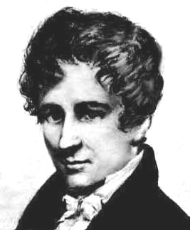
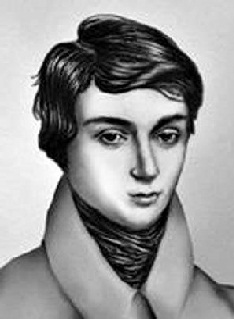
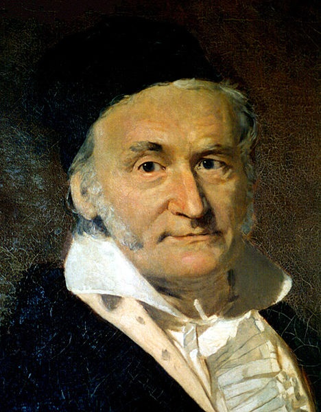
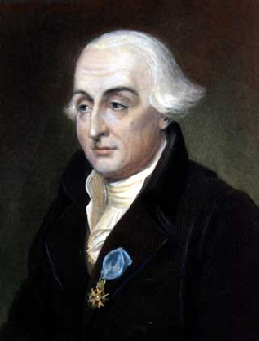
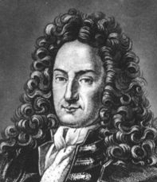
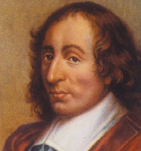
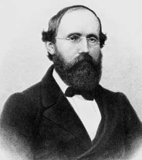

Нильс Хенрик Абель
Норвежский математик, один из крупнейших математиков 19 в. В алгебре Абель нашёл необходимое условие для того, чтобы корень уравнения выражался «в радикалах» через коэффициенты этого уравнения и привёл конкретные примеры уравнений 5-й степени, чьи корни нельзя выразить в радикалах.
 Архимед
Архимед
Древнегреческий математик, физик, механик и инженер из Сиракуз. Сделал множество открытий в геометрии. Заложил основы механики, гидростатики. Автор ряда важных изобретений.

Эварист Галуа
Выдающийся французский математик, основатель современной высшей алгебры. Он заложил основы современной алгебры, вышел на такие фундаментальные понятия, как группа (Галуа первым использовал этот термин, активно изучая симметрические группы) и поле (конечные поля носят название полей Галуа).

Иоганн Карл Фридрих Гаусс
Выдающийся немецкий математик, астроном и физик. С именем Гаусса связаны фундаментальные исследования почти во всех основных областях математики: алгебре, дифференциальной и неевклидовой геометрии, в математическом анализе, теории функций комплексного переменного, теории вероятностей, а также в астрономии, геодезии и механике.
 Андрей Николаевич Колмогоров
Андрей Николаевич Колмогоров
Советский математик, один из крупнейших математиков ХХ века.
Колмогоров — один из основоположников современной теории вероятностей. Им получены фундаментальные результаты в топологии, геометрии, математической логике, классической механике, теории турбулентности, теории сложности алгоритмов, теории информации, теории функций, теории тригонометрических рядов, теории меры, теории приближения функций, теории множеств, теории дифференциальных уравнений, теории динамических систем, функциональном анализе и в ряде других областей математики и её приложений.

Жозеф Луи Лагранж
Французский математик и механик. Автор классического трактата «Аналитическая механика», в котором Лагранж расширил основы статики и механики и установил «общую формулу», также известную как принцип возможных перемещений. Формула конечных приращений и несколько других теорем названы его именем. Издал курс математического анализа в двух частях под названиями «Теория аналитических функций» (1797) и «Лекции по исчислению функций» (1801-1806). В 1898 был опубликован «Трактат о решении численных уравнений всех степеней». Сочинения Лагранжа по математике, астрономии и механике составляют 14 томов.

Готфрид Вильгельм фон Лейбниц
Немецкий философ, математик, юрист, дипломат. Независимо от Ньютона, создал математический анализ — дифференциальное и интегральное исчисление, основанные на бесконечно малых.
В 1684 году Лейбниц публикует первую в мире крупную работу по дифференциальному исчислению: «Новый метод максимумов и минимумов», в которой излагаются основы дифференциального исчисления, правила дифференцирования выражений.
 Исаак Ньютон
Исаак Ньютон
Английский физик, математик и астроном, один из создателей классической физики. Автор фундаментального труда «Математические начала натуральной философии», в котором он изложил закон всемирного тяготения и три закона механики, ставшие основой классической механики.

Блез Паскаль
Французский религиозный философ, писатель, математик и физик. Классик французской литературы, один из основателей математического анализа, теории вероятностей и проективной геометрии, создатель первых образцов счётной техники, автор основного закона гидростатики. Написал первую работу о конических сечениях, в которой высказал одну из важных теорем проективной геометрии. Паскаль посвятил ряд работ арифметическим рядам и биномиальным коэффициентам.

Георг Фридрих Бернхард Риман
Немецкий математик. Вслед за Коши, рассмотрел формализацию понятия интеграла и ввёл своё определение — интеграл Римана. Создал общую теорию многозначных комплексных функций, построив для них «римановы поверхности». Риман использовал не только аналитические, но и топологические методы; позднее его труды продолжил Пуанкаре, завершив создание топологии.